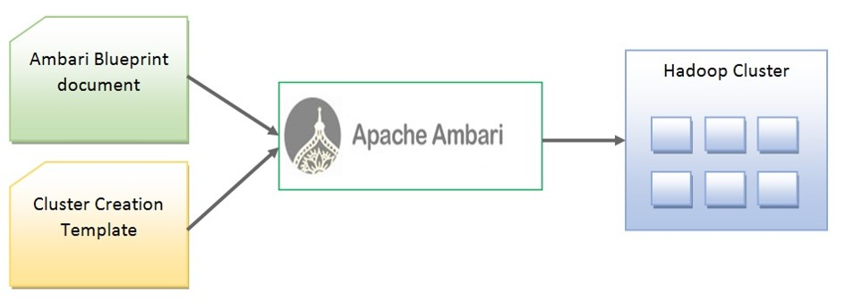
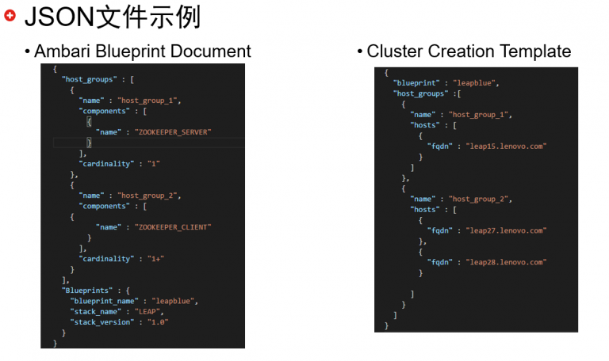

产品自动化测试#
目前公司正在开发大数据平台，在开发过程中，每当发布了新版本时，开发组通知测试组，然后测试组从 Hudson （一个持续集成工具）下载所有的 rpm 包，在测试机上进行安装部署，然后跑测试用例，出测试结果，恢复系统环境以供再次安装测试。这个过程中显然有很多重复性工作，因此，为了缩短产品迭代周期，节省劳动力，我们需要一套自动化测试方案。 本文就笔者目前条件和环境探讨一个可行的方案，不作为具体实现，触类旁通，具体实现还请参考实际情况。
基本思路#
- 首先，我们需要一个 Linux 集群，这里我们就用 Docker ，这样我们可以快速的创建一个 Linux 集群出来，并且很好的隔离系统环境，不用每次安装完再恢复系统环境。
- 其次是大数据集群的部署，其中每个组件都有那么多的配置项，怎么办？？笔者目前所开发的大数据平台是用 Ambari 来作为集群管理工具，Ambari 是一个主从架构的分布式管理工具，主要有 Seriver 和 Agent 两个服务组成，它的功能包括有集群的创建 、组件的安装与卸载、监控集群状态等等，它还提供了一个功能叫 Ambari Blueprint ，这个功能可以帮我们免去一切人工操作与各组件的配置，并让我们可以更容易地实现将大数据集群的部署与配置脚本化。在这里我们就用它来创建集群。 关于更多 Ambari Blueprint 介绍和使用方法请看本文尾部提供的链接。
实现步骤#
- 即然要部署大数据集群，那么安装包从何而来？？我们的大数据平台是用 Hudson 来实现持续集成的，而实现自动化测试的环境是另一台服务器，所以需要远程检测 Hudson 上发布的新版本并下载，这里可以用爬虫方式来检测指定页面上的内容，如果发新有的版本就下载即可。也可以在 Hudson 服务器上写一段小程序，做为一个触发点，每当有版本编译出来就远程通知给测试机，让测试机开始下载。
- 测试机一旦下载成功，便开始创建 Docker 容器，这里我们把容器当作虚拟机来用，所以打算搭建什么规模的集群就创建几个容器，本次我们打算搭建5个节点的集群，所以创建5个容器出来，这里需要注意的是，用来创建容器的镜像最好提前配置好，比如说大数据平台依赖的一些系统配置等等。
- 部署 Ambari，我们刚才创建了一共5个容器，在第一个容器内安装 Ambari-Server 与 Ambari-Agent，其它四个容器只安装 Ambari-Agent 就可以了
- 用 Ambari Blueprint 安装各个组件（如：Haoop、Spark、Hive 等），这里会用到两个 JSON 文件，这两个文件是重中之重，这两个文件作用如下：  上图中左边是两个 JSON 文件，它们通 http 请求发送给 Ambari-Server 端，然后 Ambari-Server 会根据 JSON 信息创建出一个集群来。 那么 JSON 从哪来呢，最简单的方法是从一个已安装好的 Ambari 集群导出，像下面这条命令：
curl -H "X-Requested-By: ambari" -u admin:admin -X GET \
http://$ambari_server_ip:8080/api/v1/clusters/$cluster_name?format=blueprint > blueprint_document.json这样相当于把当前的集群状态记录下来，而第二个 JSON 文件需要自己定义。下面是两个 JSON 文件中部分示例：  下面开始创建集群，将上面第一个 JSON 文件发送给 Ambari—Server 并注册一个 Blueprint：
curl -H "X-Requested-By: ambari" -i -u admin:admin \
-X POST -d @blueprint_document.json \
http://$ambari_server_ip:8080/api/v1/blueprints/blue_cluster?validate_topology=false为 Ambari 添加一个自己的私有 yum 源，让 Ambari 找到我们的安装包：
curl -u admin:admin \
-H "X-Requested-By: ambari" -i \
-X PUT -d @my_repo.json \
http://$ambari_server_ip:8080/api/v1/stacks/LEAP/versions/1.0/operating_systems/redhat6/repositories/$repo_name用注册的 Blueprint 创建集群：
curl -u admin:admin \
-H "X-Requested-By: ambari" -i \
-X POST -d @create_template.json \
http://$ambari_server_ip:8080/api/v1/clusters/$cluster_name这样 Ambari 就开始创建集群了，进入 Ambari WEB UI 可以看到进度 5. 安装好了以后就可以运行测试用例并记录结果，结果可以是自定义格式或记录 log 的方式 6. 发布测试结果给管理人员，这里最好是以发邮件的方式，比效方便而且还可以把结果也一并发出，在 Linux 下发邮件也是有很多学问的，大概可以分为两种方式，一种是把 Linux 本身当做邮件服务器，由它来直接发送给其它发件人，但这种方式有个弊端，假设我要给 abc@163.com 发一份邮件，那么邮件到达 163 服务时，它可能把我们的邮件当成垃圾邮件，导致邮件被拒收。还有一种方式是通过第三方服务器发送，假设我要给 abc@163.com 发一份邮件，我可以先把邮件交给 qq 邮件服务器，qq 服务器再转发给 163 服务器，这样就不会被拒收了，但这种方式需要先登录 qq 邮件服务器认证才行 7. 到这里就接近尾声了，脚本的实现千差万别，这里就不赘述。最后希望大家能通过本文获得一星半点的灵感，那就再好不过了。